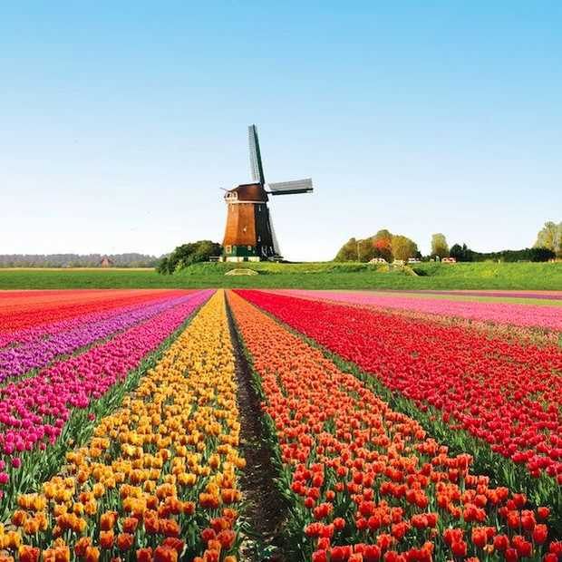
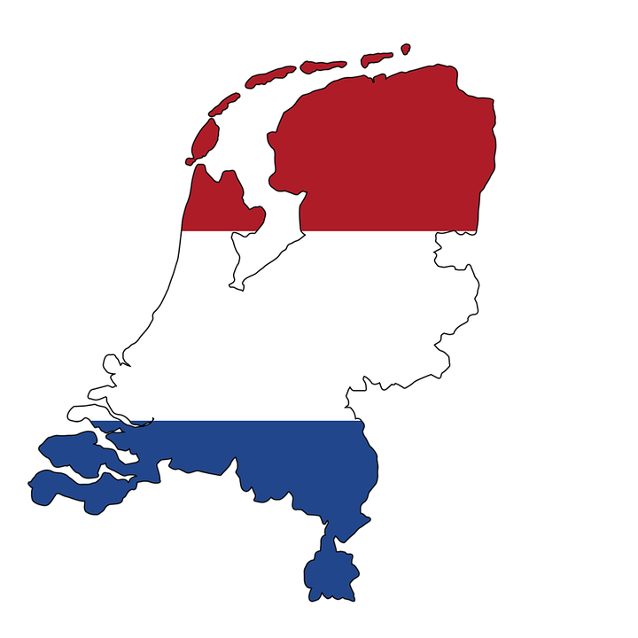

Nederland is een van de samenstellende landen van het Koninkrijk der Nederlanden.[8] Het land ligt voor het overgrote deel in het noordwesten van Europa, aan de Noordzee, aangevuld met drie bijzondere gemeenten in de Caribische Zee. Europees Nederland wordt in het zuiden begrensd door België, langs de oostgrens door Duitsland en aan west- en noordzijde door de zee. De hoofdstad van Nederland is Amsterdam, de regeringszetel is Den Haag.
Nederland heeft een inwonertal van 17.084.719 (2017) en met een oppervlakte van 41.543 km² een hoge bevolkingsdichtheid van 411,3/km² (2017). Ruim 18% van het oppervlak bestaat uit water en een groot deel van het land en de bevolking bevindt zich onder zeeniveau.[9] Het land wordt beschermd tegen het water door middel van een systeem van dijken en waterwerken. Door landwinning zijn polders gecreëerd. Bestuurlijk is het land verdeeld in twaalf provincies.
Nederland werd onafhankelijk tijdens de Tachtigjarige Oorlog (1568-1648), waarin de gezamenlijke Noordelijke en Zuidelijke Nederlanden tegen de Spaanse overheersing in opstand kwamen. In 1579 vormden de Noordelijke Nederlanden de Unie van Utrecht, waarmee een nieuwe politieke entiteit ontstond. Met de Acte van Verlatinghe van 1581 werd door de gewesten van die unie de onafhankelijkheid van de Republiek der Zeven Verenigde Nederlanden uitgeroepen. Deze werd vanaf 1609, bij het begin van het Twaalfjarig Bestand, internationaal erkend, en na de Vrede van Münster (1648) ook door Spanje. Vanaf de Franse tijd (1795-1813) ontwikkelde Nederland zich tot een natiestaat, aanvankelijk als het Verenigd Koninkrijk der Nederlanden in 1815, dat door de Belgische Revolutie in 1830 echter alweer uiteenviel. De dekolonisatie maakte in de 20e eeuw een einde aan de Nederlandse koloniën.Tegenwoordig is Nederland een van de meest ontwikkelde landen als 's werelds zevende economie naar bbp per hoofd van de bevolking (2009). Het bezet de vierde plaats in de index van de menselijke ontwikkeling (2013). De Nederlandse economie steunt vooral op een zeer hoog ontwikkelde land- en tuinbouwsector, de dienstensector en de internationale handel, met name op de doorvoer van goederen naar Duitsland.
Nederland is sinds 1848 een parlementaire democratie onder een constitutionele monarchie, een staatsvorm waarbij de macht gedeeld wordt door de koning(in), de ministers (onder wie de minister-president) en de twee kamers van het parlement. Nederland was medeoprichter van onder meer de Europese Unie, de G-10, de NAVO, de Wereldhandelsorganisatie en de OESO. Met België en Luxemburg vormt het de Benelux. Den Haag speelt een belangrijke internationale rol op juridisch gebied, als locatie voor vier internationale tribunalen en Europol.
 